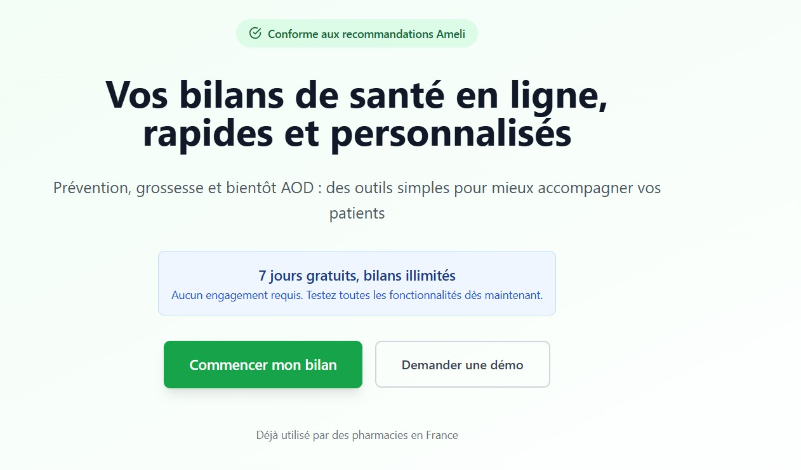
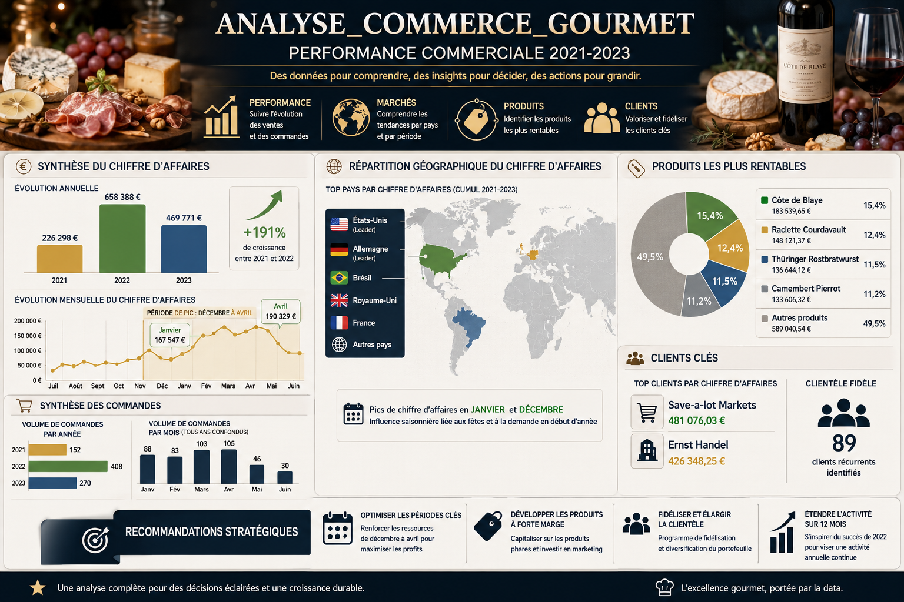
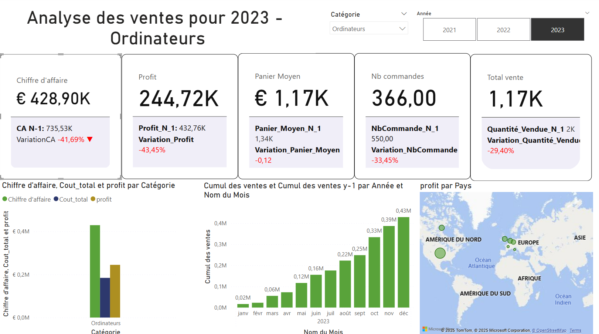
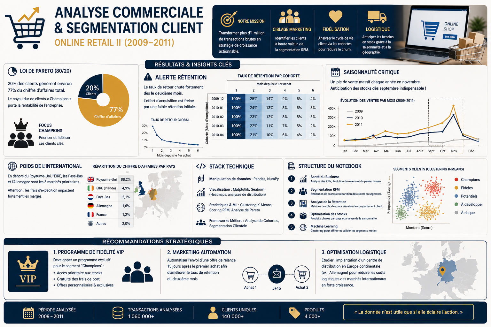
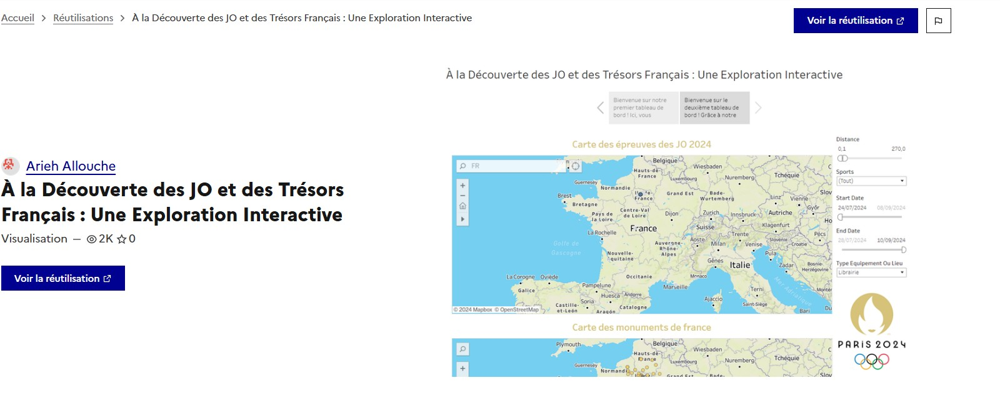
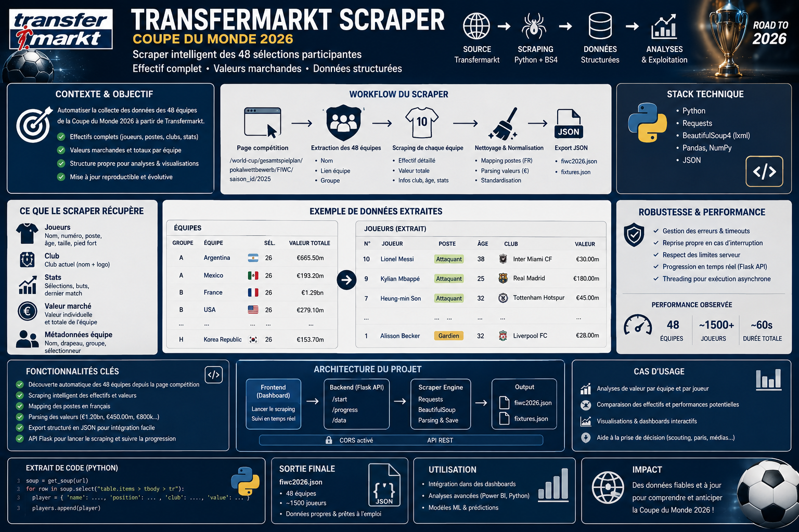

Je m'appelle Arieh. Diplômé d'un Master Data, j'ai passé les dernières années à nettoyer des bases qui font peur, écrire du SQL qui tient la route et construire des dashboards que les équipes utilisent vraiment — pas juste le jour de la démo. J'ai aussi lancé seul un SaaS pour pharmaciens, de l'idée jusqu'aux premiers clients payants. C'est cette expérience qui m'a appris qu'une bonne analyse commence toujours par une donnée propre.
Des outils maîtrisés pour transformer des données brutes en indicateurs fiables et actionnables.
| nom | poste | experience | approche |
|---|---|---|---|
| Arieh Allouche | Data Analyst | 3+ ans | La donnée doit être propre avant d'être belle. |
Au-delà du code, la garantie d'une donnée intègre, documentée et sécurisée.
ROW_NUMBER() en SQL) pour isoler et dédupliquer activement les lignes d'événements.Pour qu'une donnée survive à la rotation des équipes, elle doit être parfaitement cartographiée. Je sépare systématiquement mes dictionnaires en deux couches :
1. Métadonnées Fonctionnelles (Le Métier) :
C'est la définition business de la donnée. Par exemple, documenter ce que signifie précisément la colonne "Panier Moyen" ou quelles sont les règles comptables de calcul de la "Marge Nette".
2. Métadonnées Techniques (Le Système) :
C'est l'implémentation brute de la donnée. Par exemple, le type SQL de la colonne (DECIMAL(10,2)), le fait qu'elle n'accepte pas les valeurs nulles, et le lignage de données (data lineage) reliant sa table finale à son API source.
Des projets concrets, du code propre et de vraies problématiques résolues avec pragmatisme.

Une solution web complète en production pour aider les pharmaciens à réaliser et documenter leurs bilans de prévention de santé.

Exploration des tendances de ventes et segmentation cartographique des clients d'une épicerie fine.

Tableau de bord décisionnel de suivi des performances commerciales et comparaison temporelle N vs N-1.

Classification non-supervisée des comportements d'achat pour optimiser les campagnes d'emailing.

Conception d'une carte interactive reliant l'implantation historique des musées nationaux aux exploits des médaillés français aux JO.

Conception d'un extracteur automatique résistant aux blocages pour archiver l'historique des valeurs marchandes des joueurs.
Je m'appelle Arieh Allouche. Data Analyst basé à Paris, diplômé d'un Master en Data. Depuis mes études, une conviction ne m'a jamais quitté : une mauvaise donnée produira toujours un mauvais graphique, peu importe le soin qu'on met sur le dashboard final. C'est pour ça que je passe autant de temps sur les règles de validation en amont que sur les visualisations qu'on présente aux équipes.
Le projet dont je suis le plus fier, c'est MissionsPharma.pro, un SaaS que j'ai conçu et codé seul pour aider les pharmaciens d'officine à réaliser et documenter leurs bilans de prévention santé. Aujourd'hui il compte ses premiers utilisateurs réels — pas énorme, mais chacun est passé par une vraie démo, une vraie objection, et une vraie décision d'utiliser l'outil au quotidien. La partie technique (modèle de données, conformité RGPD santé) n'a finalement pas été la plus dure : convaincre les premiers pharmaciens de me faire confiance, ça, ça m'a appris bien plus que n'importe quel cours.
Cette double casquette — rigueur technique côté data, et confrontation directe au besoin terrain côté produit — c'est ce que j'essaie d'apporter sur chaque mission : pas juste un dashboard qui a l'air propre, mais un outil que les gens utilisent vraiment.
Hors écran, je suis plutôt du genre à ne jamais refuser un babyfoot ou une partie de ping-pong à la pause déjeuner — et je regarde le foot avec un peu trop d'attention pour quelqu'un censé être objectif avec les chiffres. Ça n'a rien à voir avec la data, mais ça aide à savoir avec qui on a envie de bosser au quotidien.
Un projet data, un dashboard Power BI complexe à concevoir ou un besoin d'automatisation ? N'hésitez pas à me contacter.